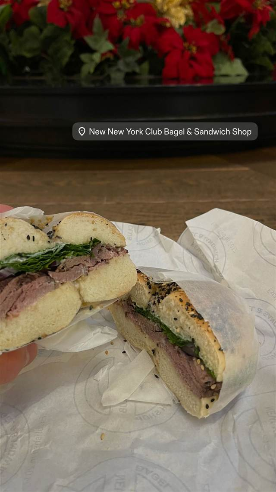

Best Bagel & Coffee
ベーグル戦争と呼ばれる激戦区、21種のベーグルとチーズ24種
BEST BAGEL & COFFEE
ペンシルベニア駅近く、ベーグル店がひしめく35丁目にある人気ベーグル店。生地から店内で手作りし焼き上げるベーグルと、豊富なクリームチーズの組み合わせが評判。
TRIVIA
豆知識
- 店があるブロックは複数のベーグル店が並び「ベーグル戦争（Bagel War）」の舞台と呼ばれている
- ベーグルは21種類、クリームチーズは24種類そろう
REVIEWS
世間の評判
4.6Googleマップ
新鮮な大きめベーグルと豊富なコーヒー
- ジャンボサイズのベーグルの美味しさを一番のお気に入りに挙げる声が多い
- コーヒーの種類が豊富で別カウンターで注文できる点を評価する声がある
Yelp 口コミ11675件
| 創業 | 2007年開業とされる（ニューヨーク・225 W 35th Streetの1店舗のみ）。 |
|---|---|
| 看板 | ベーグル（21種）とクリームチーズ（24種）の組み合わせ、サーモン（ロックス）ベーグルなど。 |
| こだわり | 生地から店内で手作りし、その場で焼き上げる自家焼成のベーグル。 |
| どこから | 海外 |
| 場所 | ペンシルベニア駅/34丁目駅 225 W 35th St, New York, NY 10001 |
| メモ | ペンシルベニア駅／34丁目駅近く。同じ35丁目のブロックに複数のベーグル店がひしめく激戦区にある。 |
食べたもの：サーモンベーグル
NEARBY
近い店・同じ系統の店
-
 ピザ タイムズスクエア-42丁目駅
Joe's Pizza (1435 Broadway店)
映画スパイダーマン2に登場したNY屈指の名物ピザ
ピザ タイムズスクエア-42丁目駅
Joe's Pizza (1435 Broadway店)
映画スパイダーマン2に登場したNY屈指の名物ピザ
-
 ルーフトップ・ラウンジ 34丁目-ハラルドスクエア駅
Top of the Strand Rooftop Bar
開閉式ガラス屋根の下エンパイア・ステート・ビルを望むバー
ルーフトップ・ラウンジ 34丁目-ハラルドスクエア駅
Top of the Strand Rooftop Bar
開閉式ガラス屋根の下エンパイア・ステート・ビルを望むバー
-
 ルーフトップ・ラウンジ 34th St-Herald Sq
Monarch Rooftop
18階のペントハウスに広がる465平米の空間から望む眺望
ルーフトップ・ラウンジ 34th St-Herald Sq
Monarch Rooftop
18階のペントハウスに広がる465平米の空間から望む眺望
-

ベーグル 麻布十番 NEW NEW YORK CLUB BAGEL & SANDWICH SHOP 週末限定、SNSで話題になったレインボーベーグル 昼 ¥1,000～¥1,999 夜 ¥1,000～¥1,999 -
 ベーグル レキシントン・アベニュー/51丁目駅
Ess-a-Bagel (3rd Ave店)
店名は「ベーグルを食べな」の意、1976年創業のNY老舗ベーグル店
ベーグル レキシントン・アベニュー/51丁目駅
Ess-a-Bagel (3rd Ave店)
店名は「ベーグルを食べな」の意、1976年創業のNY老舗ベーグル店
-
 ステーキ 34th St-Herald Sq
Keens Steakhouse
ヘラルド・スクエア劇場街で唯一現存し陶製パイプ5万本が飾られている
ステーキ 34th St-Herald Sq
Keens Steakhouse
ヘラルド・スクエア劇場街で唯一現存し陶製パイプ5万本が飾られている